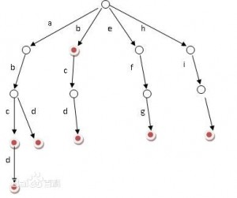

定义
字典树又称单词查找树，Trie树，是一种如图1所示的树形结构。
字典树

图1
动态存储
结构
每棵字典树都有一个根节点，每一个结点都有26个指针，分别指向a到z26个字母，有一个数据域，存储要记录的数据，有一个标记域，标记字符串是否结束。
struct Trie
{
//因为next与字符有一一对应的关系，所以不需要存储数据
int sign;//标记字符串结尾
struct Trie *next[26];//指向下一个字符
}*head,*p,*now;
开辟新的存储空间
Trie *new()
{
Trie *p = new Trie;//开辟内存
for(i = 0;i < 26;i++)//初始化操作
{
p->next[i] = NULL;
}
p->sign = 0;
return p;
}
字典树的初始化
下面的代码只是添加一个字符串，如果添加多个字符串，可以在调用函数中进行修改，也可以在下面的函数中加循环进行控制。
void init()
{
char sz[30];
int i,j,k,l;
scanf("%s",sz);
l = strlen(sz);
head = new();
p = head;
for(i = 0;i < l;i++)
{
j = sz[i] - 'a';
if(p->next[j] == NULL)
{
now = new();
now->data = sz[i];
p->next[j] = now;//将新建的节点连接在字典树上
}
p = p->next[j];
}
p->sign = 1;
}
字符串的查找
给定一个字符串，询问该字符串是否已经出现过，即在原来建立的字典树上进行查找的过程。
字符串查找的过程和建树的过程很相似，只不过需要判断节点是不是字符串的结束。
bool lookup()
{
char sz[30];
int i,j,l;
scanf("%s",sz);
p = head;
l = strlen(sz);
for(i = 0;i < l;i++)
{
j = sz[i] - 'a';
//没有这个字符，则下面都没有，返回失败
if(p->next[j] == NULL)
return false;
else
p = p->next[j];
//如果已是要查询的字符串最后一个字符，判断有没有结束标志
if(i == l - 1)
{
if(p->sign == 1)
return true;
else
return false;
}
}
}
释放内存
所有的这一组数据使用完之后，就要对其进行释放内存。
void delet(Trie *head)
{
if(head)
{
for(int i = 0;i < 26;i++)
{
if(head->next[i]!=NULL)
delet(head->next[i]);
}
}
delete head;
head = NULL;
}
静态存储
以上所讲述的字典树是动态开辟内存的方式，用完之后一定不要忘记释放内存，不然很容易就会MLE，当然，有些题目卡的就是动态存储，所以我们就要用到静态存储，接下来讲解静态存储。
结构
//定义结构
struct Trie
{
int sign;
int next[26];
}trie[MAX];
int top = 0;
初始化新建的节点 并返回位置
Trie *newTrie()
{
memset(trie[top].next,-1,sizeof(trie[top].next));
trie[top].sign = 0;
return top++;
}
建立字典树
void init(int k,char *sz)
{
int i,j,l;
l = strlen(sz);
for(i = 0;i < l;i++)
{
j = sz[i] - 'a';
if(trie[k].next[j] == -1)
{
trie[k].next[j] = newTrie();
}
k = trie[k].next[j];
}
trie[k].sign = 1;
}
查询有没有该字符串
int lookup(int k,char *sz)
{
int i,j,l;
l = strlen(sz);
for(i = 0;i < l;i++)
{
j = sz[i] - 'a';
if(trie[k].next[j] == -1)
return -1;
k = trie[k].next[j];
}
return trie[k].sign;
}
字典树的性质
（1）根节点不包含字符，除根节点外每一个结点都只包含一个字符
（2）从根节点到某一个节点，路径上的节点连接起来就是一个字符串
（3）每个节点的所有子节点包含的字符都不相同
字典树的应用
（1）串的检索
给出一些已有的单词作为熟词，再给出一些词汇，找出这些词汇中没有在熟词里出现的词。
可以用枚举，哈希，字典树进行搜索
（2）“串”的排序
给出一些互不相同的单词，按照字典序进行排列
采用数组的方式创建字典树，这棵树的每个结点的儿子按照字母大小排序，再对这棵树进行先序遍历。
（3）最长公共前缀
查找任意两个字符串的最长公共前缀
对所有串建立字典树，对于两个串的最长公共前缀的长度即他们所在的结点的公共祖先个数，于是，问题就转化为当时公共祖先问题。
拓展：
本文中用到的函数memset()
void *memset(void *s, int ch, size_t n);
函数解释：将s中前n个字节 （typedef unsigned int size_t ）用 ch 替换并返回 s 。
memset：作用是在一段内存块中填充某个给定的值，它是对较大的结构体或数组进行清零操作的一种最快方法